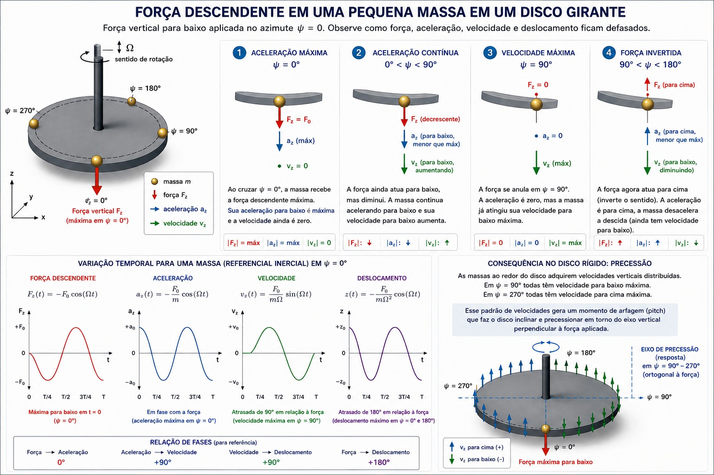

Sumário
- 1. Introdução e Objetivo do Trabalho
- 2. Intuição Física: A Quadratura e a Massa Girante
- 3. O Giroscópio como Bloco de Construção
- 4. O Rotor de Asas Rotativas
- 5. Transformação de Coleman e a Demonstração da Equivalência
- 6. Tabela Comparativa Geral e Conclusão
1. Introdução e Objetivo do Trabalho
Um dos tópicos mais desafiadores no ensino e na prática da dinâmica de rotores de asas rotativas é compreender a relação entre a resposta de batimento das pás e a precessão giroscópica de corpos rígidos. Na literatura introdutória, afirma-se frequentemente que o rotor de um helicóptero “comporta-se como um giroscópio”, precessando \(90^\circ\) após a aplicação de uma força. Por outro lado, na dinâmica de estruturas e aeroelasticidade, demonstra-se que a pá de um rotor articulado é um oscilador harmônico excitado em sua frequência natural de rotação (\(1/\text{rev}\)), cuja resposta ressonante em regime permanente apresenta um atraso de fase de \(90^\circ\).
O objetivo principal deste trabalho é demonstrar formalmente que essas duas explicações não são visões concorrentes, mas sim duas leituras matemáticas da mesma equação de movimento, expressas em referenciais diferentes:
- No referencial girante da pá, o fenômeno é visto como a resposta de um oscilador harmônico em ressonância (\(1/\text{rev}\)) estabilizado por amortecimento aerodinâmico.
- No referencial fixo do helicóptero, a resposta coletiva de todas as pás forma o Plano de Ponta de Pá (Tip-Path Plane — TPP), cuja dinâmica diferencial é formalmente equivalente às equações de Euler de um giroscópio acoplado.
Para demonstrar essa equivalência sem saltos lógicos, este trabalho percorrerá o seguinte itinerário:
- Intuição Física: Explicar por que uma força em \(\psi = 0^\circ\) gera deslocamento máximo em \(\psi = 90^\circ\).
- Modelagem do Giroscópio: Derivar passo a passo as equações no vácuo, com amortecimento e com rigidez torsional, analisando polos e ângulos de fase.
- Modelagem do Rotor: Derivar de primeiros princípios a rigidez centrífuga, o amortecimento aerodinâmico, o Número de Lock e o efeito de hinge offset / hingeless.
- Demonstração da Equivalência via Transformação de Coleman: Mapear as equações do rotor para o referencial inercial e comparar termo a termo com o giroscópio.
2. Intuição Física: A Quadratura e a Massa Girante
O Comportamento da Massa na Borda do Disco
Considere um disco rígido girando com velocidade angular constante \(\Omega\). Imagine uma massa pontual \(m\) localizada na borda do disco em um raio \(R\). A posição azimutal da massa é dada por \(\psi(t) = \Omega t\).
Suponha que essa massa seja submetida a uma força vertical descendente \(F_z(\psi)\) que atinge seu valor máximo no azimute de referência \(\psi = 0^\circ\) (força apontando para baixo) e varia harmonicamente com o azimute:
\[ F_z(t) = -F_0 \cos(\Omega t) \]
A segunda lei de Newton na direção vertical \(z\) fornece a aceleração instantânea da massa:
\[ \ddot{z}(t) = \frac{F_z(t)}{m} = -\frac{F_0}{m} \cos(\Omega t) \]
A aceleração vertical atinge seu valor negativo máximo (para baixo) exatamente em \(\psi = 0^\circ\) (\(t=0\)). Integrando a aceleração em relação ao tempo, obtém-se a velocidade vertical \(v_z(t) = \dot{z}(t)\):
\[ v_z(t) = \int \ddot{z}(t) \, dt = -\frac{F_0}{m\Omega} \sin(\Omega t) = \frac{F_0}{m\Omega} \cos\left(\Omega t + \frac{\pi}{2}\right) \]
A velocidade vertical não é máxima em \(\psi = 0^\circ\); em \(\psi = 0^\circ\), ela é nula (\(v_z = 0\)). Conforme a massa gira de \(\psi = 0^\circ\) até \(\psi = 90^\circ\), a força continua empurrando-a para baixo (com intensidade decrescente), acumulando velocidade descendente. A velocidade descendente atinge seu valor máximo exatamente em \(\psi = 90^\circ\) (\(\Omega t = \pi/2\)).
Integrando a velocidade vertical mais uma vez, obtém-se o deslocamento vertical \(z(t)\):
\[ z(t) = \int v_z(t) \, dt = \frac{F_0}{m\Omega^2} \cos(\Omega t) = -\frac{F_0}{m\Omega^2} \cos(\Omega t - \pi) \]
O deslocamento vertical descendente máximo ocorre em \(\psi = 180^\circ\) (\(\Omega t = \pi\)).
Do Ponto Isolado ao Disco Rígido: A Origem da Precessão Espacial
Se o sistema consistisse em um único ponto livre sem restauração, o deslocamento máximo estaria \(180^\circ\) defasado da força, agindo como um integrador duplo puro. Porém, em um disco rígido ou em um rotor de várias massas conectadas:
- Em \(\psi = 90^\circ\), todas as massas que passam por esse ponto possuem a velocidade descendente máxima.
- No lado oposto (\(\psi = 270^\circ\)), as massas possuem a velocidade ascendente máxima.
- Em \(\psi = 0^\circ\) e \(\psi = 180^\circ\), a velocidade vertical instantânea do disco é nula.
Como o disco é um corpo rígido com ponto de apoio central, uma distribuição de velocidades verticais que é máxima na linha \(\psi = 90^\circ - 270^\circ\) força o plano do disco a girar (inclinar-se) em torno do eixo \(\psi = 0^\circ - 180^\circ\).
Consequentemente, a inclinação máxima do plano do disco (o ponto mais baixo do disco) ocorre na região de \(\psi = 90^\circ\). A força aplicada em \(\psi = 0^\circ\) produz o deslocamento angular máximo do disco \(90^\circ\) depois. Isso é a resposta em quadratura ou precessão espacial.

3. O Giroscópio como Bloco de Construção
Consideremos agora a modelagem dinâmica do giroscópio clássico como um corpo rígido simétrico girando a uma velocidade angular constante \(\Omega\) em torno do seu eixo polar.
Notação e Parâmetros
- \(I_T\): Momento de inércia transversal (em torno dos eixos de inclinação \(x\) e \(y\)).
- \(I_P\): Momento de inércia polar (em torno do eixo de rotação \(z\)).
- \(\Omega\): Velocidade angular de rotação do giroscópio.
- \(\theta_x, \theta_y\): Ângulos de inclinação (arfagem e rolamento) no referencial inercial/fixo.
- \(M_x, M_y\): Momentos externos aplicados nos eixos \(x\) e \(y\).
- \(D\): Coeficiente de amortecimento viscoso torsional.
- \(K\): Rigidez torsional externa aplicada aos eixos de inclinação.
Giroscópio Ideal no Vácuo (\(D = 0, K = 0\))
No referencial inercial, para pequenas inclinações \(\theta_x\) e \(\theta_y\), as equações de Euler linearizadas são:
\[ \begin{cases} I_T \ddot{\theta}_x + I_P \Omega \dot{\theta}_y = M_x \\ I_T \ddot{\theta}_y - I_P \Omega \dot{\theta}_x = M_y \end{cases} \]
O termo cruzado \(I_P \Omega \dot{\theta}\) é a força/momento giroscópico acoplado, que converte uma taxa de inclinação no eixo \(y\) em um momento no eixo \(x\), e vice-versa.
Formulacao Complexa
Definimos a inclinação complexa \(\theta(t) = \theta_x(t) + i \theta_y(t)\) e o momento complexo \(M(t) = M_x(t) + i M_y(t)\). Multiplicando a segunda equação por \(i\) e somando à primeira:
\[ I_T (\ddot{\theta}_x + i \ddot{\theta}_y) - i I_P \Omega (\dot{\theta}_x + i \dot{\theta}_y) = M_x + i M_y \]
\[ I_T \ddot{\theta} - i I_P \Omega \dot{\theta} = M \]
Equação Característica e Polos
Para a equação homogênea (\(M = 0\)), assumindo solução do tipo \(\theta(t) = \Theta e^{st}\):
\[ I_T s^2 - i I_P \Omega s = 0 \implies s \left( I_T s - i I_P \Omega \right) = 0 \]
As raízes (polos do sistema) são:
\[ s_1 = 0 \qquad \text{e} \qquad s_2 = i \left( \frac{I_P}{I_T} \right) \Omega \]
Interpretação Física dos Polos:
- \(s_1 = 0\): Corresponde ao modo de posição nula/constante. O giroscópio livre não possui força restauradora de posição; qualquer orientação angular alcançada permanece constante na ausência de momentos.
- \(s_2 = i \frac{I_P}{I_T} \Omega\): Corresponde ao modo de precessão livre (nutação puramente senoidal sem amortecimento). Como a parte real é nula (\(\sigma = 0\)), o giroscópio ideal no vácuo é marginalmente estável.
- Resposta Forçada em Ressonância: Se aplicarmos um momento harmônico exatamente na frequência \(1/\text{rev}\) (\(\omega = \Omega\)), e para o caso de um disco fino onde \(I_P \approx 2 I_T\) (ou \(I_P = I_T\)), a excitação coincide com a frequência natural e, devido à ausência de amortecimento, a amplitude cresce secularmente sem limite no regime linear.
Giroscópio com Amortecimento Viscoso (\(D > 0, K = 0\))
Adicionando um amortecimento viscoso \(D\) que opõe às taxas de inclinação \(\dot{\theta}_x\) e \(\dot{\theta}_y\):
\[ \begin{cases} I_T \ddot{\theta}_x + D \dot{\theta}_x + I_P \Omega \dot{\theta}_y = M_x \\ I_T \ddot{\theta}_y + D \dot{\theta}_y - I_P \Omega \dot{\theta}_x = M_y \end{cases} \]
Na forma complexa:
\[ I_T \ddot{\theta} + (D - i I_P \Omega) \dot{\theta} = M \]
Equação Característica e Polos
\[ I_T s^2 + (D - i I_P \Omega) s = 0 \implies s \left[ I_T s + (D - i I_P \Omega) \right] = 0 \]
Os polos são:
\[ s_1 = 0 \qquad \text{e} \qquad s_2 = -\frac{D}{I_T} + i \left( \frac{I_P}{I_T} \right) \Omega \]
Interpretação Física:
O amortecimento viscoso introduz uma parte real negativa \(\sigma = -D/I_T\) no modo oscilatório. A precessão livre agora é um movimento espiral decrescente no tempo (estável). O polo em \(s_1 = 0\) permanece na origem pois ainda não há rigidez de posição.
Giroscópio com Rigidez Torsional Externa (\(D > 0, K > 0\))
Adicionando molas torsionais externas de rigidez \(K\) em cada eixo:
\[ \begin{cases} I_T \ddot{\theta}_x + D \dot{\theta}_x + I_P \Omega \dot{\theta}_y + K \theta_x = M_x \\ I_T \ddot{\theta}_y + D \dot{\theta}_y - I_P \Omega \dot{\theta}_x + K \theta_y = M_y \end{cases} \]
Na forma complexa unificada:
\[ I_T \ddot{\theta} + (D - i I_P \Omega) \dot{\theta} + K \theta = M \]
Equação Característica Geral
\[ I_T s^2 + (D - i I_P \Omega) s + K = 0 \]
Usando a fórmula quadrática:
\[ s = \frac{-(D - i I_P \Omega) \pm \sqrt{(D - i I_P \Omega)^2 - 4 I_T K}}{2 I_T} \]
A presença de \(K > 0\) remove o polo da origem (\(s_1 \neq 0\)), deslocando ambos os polos e estabelecendo uma posição de equilíbrio elástico estático.
Resposta em Frequência, Rigidez Efetiva e Ângulo de Fase
Para avaliar a resposta forçada a uma excitação harmônica \(M(t) = M_0 e^{i \omega t}\), assumimos resposta permanente \(\theta(t) = \Theta e^{i \omega t}\):
\[ \left[ -I_T \omega^2 + i \omega (D - i I_P \Omega) + K \right] \Theta = M_0 \]
\[ \left[ (K - I_T \omega^2 + \omega I_P \Omega) + i \omega D \right] \Theta = M_0 \]
Definimos a Rigidez Efetiva Giroscópica \(K_{\text{ef}}(\omega)\) como a parte real do operador:
\[ K_{\text{ef}}(\omega) = K - I_T \omega^2 + \omega I_P \Omega \]
A função de transferência de resposta em frequência é:
\[ \Theta(\omega) = \frac{M_0}{K_{\text{ef}}(\omega) + i \omega D} \]
A amplitude \(|\Theta|\) e o ângulo de fase \(\phi\) são dados por:
\[ |\Theta| = \frac{|M_0|}{\sqrt{[K_{\text{ef}}(\omega)]^2 + (\omega D)^2}} \]
\[ \phi = \arctan \left( \frac{\omega D}{K_{\text{ef}}(\omega)} \right) = \arctan \left( \frac{\omega D}{K - I_T \omega^2 + \omega I_P \Omega} \right) \]
Análise do Ângulo de Fase \(\phi\):
Ressonância Giroscópica Pura (\(K_{\text{ef}}(\omega) = 0\)): Quando a rigidez efetiva se anula, a parte real do denominador desaparece. O ângulo de fase torna-se:
\[ \phi = \arctan \left( \frac{\omega D}{0} \right) = 90^\circ \]
A resposta está exatamente em quadratura (\(90^\circ\) atrasada em relação à força aplicada).
Efeito de Rigidez Dominante (\(K_{\text{ef}}(\omega) > 0\)): Se a rigidez externa \(K\) for grande de modo que \(K_{\text{ef}}(\omega) > 0\), o denominador possui parte real positiva:
\[ \phi < 90^\circ \]
A fase diminui, aproximando a resposta espacial do eixo de aplicação da força.
Efeito Inercial Dominante (\(K_{\text{ef}}(\omega) < 0\)): Se o termo inercial ou de rotação dominar fazendo com que \(K_{\text{ef}}(\omega) < 0\), a fase supera \(90^\circ\):
\[ 90^\circ < \phi \le 180^\circ \]
4. O Rotor de Asas Rotativas
Analisaremos agora a dinâmica de batimento (flapping) da pá de um rotor no referencial girante.
Notação e Parâmetros
- \(I_b\): Momento de inércia de batimento da pá em relação à articulação (\(\int_0^R r^2 dm\)).
- \(\Omega\): Velocidade angular de rotação do rotor.
- \(\psi\): Posição azimutal da pá (\(\psi = \Omega t\)).
- \(\beta\): Ângulo de batimento (flap angle) da pá.
- \(C_\beta\): Coeficiente de amortecimento aerodinâmico de batimento.
- \(K_{cf}\): Rigidez centrífuga de batimento (\(I_b \Omega^2\)).
- \(K_e\): Rigidez equivalente devida ao hinge offset (excentricidade da articulação \(e\)).
- \(K_s\): Rigidez elástica estrutural da raiz da pá (rotores hingeless / bearingless).
- \(\gamma\): Número de Lock (\(\frac{\rho a c R^4}{I_b}\)).
Pá Articulada no Vácuo e Rigidez Centrífuga
Considere uma pá articulada na origem (\(e=0\)) girando no vácuo (\(C_\beta = 0\), sem forças aerodinâmicas). Quando a pá se desloca do plano de rotação por um ângulo \(\beta\), a força centrífuga atuando em um elemento de massa \(dm\) a uma distância \(r\) desenvolve um momento restaurador em torno da articulação de batimento:
\[ d M_{cf} = -(r \Omega^2 dm) \cdot (r \sin \beta) \approx -r^2 \Omega^2 \beta \, dm \]
Integrando ao longo de toda a extensão da pá de \(0\) a \(R\):
\[ M_{cf} = -\beta \Omega^2 \int_0^R r^2 dm = -I_b \Omega^2 \beta \]
O termo \(K_{cf} = I_b \Omega^2\) representa a Rigidez Centrífuga de Batimento. Esta rigidez não decorre de uma mola física, mas sim da geometria da rotação.
A equação de movimento da pá no vácuo sob um momento excitador \(M_1 \cos(\Omega t)\) é:
\[ I_b \ddot{\beta} + I_b \Omega^2 \beta = M_1 \cos(\Omega t) \]
Dividindo por \(I_b\):
\[ \ddot{\beta} + \Omega^2 \beta = \frac{M_1}{I_b} \cos(\Omega t) \]
Frequência Natural e Polos no Vácuo
A frequência natural de batimento no vácuo é \(\omega_n = \sqrt{\frac{I_b \Omega^2}{I_b}} = \Omega\).
O rotor articulado no vácuo possui uma frequência natural exatamente igual à frequência de rotação (\(1/\text{rev}\)). A equação característica \(s^2 + \Omega^2 = 0\) fornece os polos:
\[ s_{1,2} = \pm i \Omega \]
O “Cancelamento” Inercial e Centrífugo
Para uma resposta harmônica \(\beta(t) = B \cos(\Omega t - \phi)\):
- O termo inercial é: \(I_b \ddot{\beta} = -I_b \Omega^2 \beta(t)\)
- O termo centrífugo é: \(K_{cf} \beta = +I_b \Omega^2 \beta(t)\)
Somando ambos os termos reativos:
\[ I_b \ddot{\beta} + I_b \Omega^2 \beta = -I_b \Omega^2 \beta(t) + I_b \Omega^2 \beta(t) \equiv 0 \]
Em rotação de \(1/\text{rev}\), o termo inercial e o termo centrífugo cancelam-se mutuamente a cada instante t. Na ausência de amortecimento (\(C_\beta = 0\)), a solução para excitação exatamente na frequência ressonante \(\Omega\) cresce linearmente com o tempo:
\[ \beta(t) = \frac{M_1}{2 I_b \Omega} t \sin(\Omega t) \]
Assim como o giroscópio ideal no vácuo, o rotor no vácuo não possui amplitude estacionária finita em ressonância.
Origem do Amortecimento Aerodinâmico e Número de Lock
Quando o rotor opera na atmosfera, o movimento de batimento da pá \(\dot{\beta}\) gera uma velocidade vertical relativa do ar no elemento de pá \(U_p = r \dot{\beta}\). Isso altera o ângulo de ataque local \(\alpha(r)\):
\[ \Delta \alpha(r) = -\frac{U_p}{U_t} = -\frac{r \dot{\beta}}{\Omega r} = -\frac{\dot{\beta}}{\Omega} \]
A variação correspondente na sustentação aerodinâmica gera um momento de amortecimento oposto à velocidade de batimento \(\dot{\beta}\). Integrando ao longo da pá:
\[ M_{aero\_damp} = -\int_0^R \frac{1}{2} \rho U_t^2 c a \left( \frac{r \dot{\beta}}{\Omega r} \right) r \, dr = -\frac{1}{8} \rho a c R^4 \Omega \dot{\beta} \]
Definindo o Número de Lock \(\gamma\), que quantifica a razão entre as forças aerodinâmicas e as forças inerciais da pá:
\[ \gamma = \frac{\rho a c R^4}{I_b} \]
O coeficiente de amortecimento aerodinâmico \(C_\beta\) torna-se:
\[ C_\beta = \frac{1}{8} \rho a c R^4 \Omega = \frac{\gamma I_b \Omega}{8} \]
O amortecimento de batimento em um rotor de helicóptero é de origem puramente aerodinâmica e é diretamente proporcional ao Número de Lock \(\gamma\) e à velocidade angular \(\Omega\).
Rotor Articulado/Teetering na Atmosfera
Incluindo o amortecimento aerodinâmico \(C_\beta\), a equação de batimento no referencial girante passa a ser:
\[ I_b \ddot{\beta} + C_\beta \dot{\beta} + I_b \Omega^2 \beta = M_1 \cos(\Omega t) \]
\[ \ddot{\beta} + \frac{\gamma \Omega}{8} \dot{\beta} + \Omega^2 \beta = \frac{M_1}{I_b} \cos(\Omega t) \]
Polos no Plano Completo \(s\)
A equação característica \(s^2 + \frac{\gamma \Omega}{8} s + \Omega^2 = 0\) possui as raízes:
\[ s_{1,2} = -\frac{\gamma \Omega}{16} \pm i \Omega \sqrt{1 - \left(\frac{\gamma}{16}\right)^2} \]
Como \(\gamma > 0\) (tipicamente entre 5 e 10 para helicópteros), a parte real é estritamente negativa (\(\sigma = -\frac{\gamma \Omega}{16}\)). O amortecimento aerodinâmico move os polos para o semiplano esquerdo, garantindo a estabilidade e a existência de um regime permanente estacionário de amplitude finita.
Resposta Estacionária e Ângulo de Fase
Para \(\beta(t) = \Re\{ B e^{i \Omega t} \}\):
\[ \left[ -I_b \Omega^2 + i \Omega C_\beta + I_b \Omega^2 \right] B = M_1 \implies i \Omega C_\beta B = M_1 \]
\[ B = \frac{M_1}{i \Omega C_\beta} = \frac{M_1}{\Omega C_\beta} e^{-i \frac{\pi}{2}} \]
\[ \beta(t) = \frac{M_1}{\Omega C_\beta} \cos\left(\Omega t - 90^\circ\right) \]
Em um rotor articulado puro (\(e=0\)), o cancelamento perfeito entre os termos inercial e centrífugo faz com que a resposta seja governada unicamente pelo amortecimento aerodinâmico, resultando em uma defasagem de fase estacionária de exatamente \(90^\circ\).
Rotores com Hinge Offset e Hingeless (\(\omega_n > \Omega\))
Em rotores reais com excentricidade da articulação (hinge offset \(e > 0\)) ou rotores rígidos/flexíveis sem articulação (hingeless / bearingless), surge uma rigidez mecânica ou geométrica adicional:
- \(K_e\): Rigidez do hinge offset (\(K_e \approx \frac{3}{2} \frac{e}{R} I_b \Omega^2\)).
- \(K_s\): Rigidez elástica de mola na raiz da pá.
A rigidez total de batimento \(K_{tot}\) passa a ser:
\[ K_{tot} = K_{cf} + K_e + K_s = I_b \Omega^2 + K_e + K_s > I_b \Omega^2 \]
A frequência natural não dimensional de batimento \(\nu_\beta = \frac{\omega_n}{\Omega}\) torna-se maior que \(1.0/\text{rev}\):
\[ \nu_\beta = \sqrt{1 + \frac{K_e + K_s}{I_b \Omega^2}} > 1.0 \]
(Tipicamente \(\nu_\beta \approx 1.03 - 1.05\) para rotores com offset e \(\nu_\beta \approx 1.10 - 1.20\) para rotores hingeless).
Generalização: Resposta de Fase e Amplitude no Rotor
A equação genérica de batimento para qualquer rotor é:
\[ I_b \ddot{\beta} + C_\beta \dot{\beta} + K_{tot} \beta = M_1 \cos(\omega t) \]
A amplitude \(B\) e o ângulo de atraso de fase \(\phi\) para uma excitação em frequência \(\omega\) são:
\[ B = \frac{M_1}{\sqrt{(K_{tot} - I_b \omega^2)^2 + (C_\beta \omega)^2}} \]
\[ \phi = \arctan \left( \frac{C_\beta \omega}{K_{tot} - I_b \omega^2} \right) \]
Para excitação de \(1/\text{rev}\) (\(\omega = \Omega\)), substituindo \(C_\beta = \frac{\gamma I_b \Omega}{8}\):
\[ \phi = \arctan \left( \frac{\frac{\gamma}{8} I_b \Omega^2}{K_{tot} - I_b \Omega^2} \right) = \arctan \left( \frac{\frac{\gamma}{8}}{\nu_\beta^2 - 1} \right) \]
Análise do Ângulo de Fase no Rotor:
Rotor Articulado Puro (\(\nu_\beta = 1.0\), \(K_{tot} = I_b \Omega^2\)): Denominador do argumento é zero \(\implies \phi = \arctan(\infty) = 90^\circ\).
Rotor com Hinge Offset ou Hingeless (\(\nu_\beta > 1.0\), \(K_{tot} > I_b \Omega^2\)): Como \(K_{tot} - I_b \Omega^2 > 0\), o argumento do arcotangente é finito e positivo:
\[ \phi < 90^\circ \]
A resposta antecipa-se angularmente. O pico de batimento ocorre antes de \(90^\circ\) (tipicamente \(80^\circ\) a \(85^\circ\) para offset e \(70^\circ\) a \(75^\circ\) para hingeless).
5. Transformação de Coleman e a Demonstração da Equivalência
Para provar rigorosamente a identidade matemática entre o rotor e o giroscópio, devemos transformar as equações de movimento do rotor (escritas para pás individuais no referencial girante) para o referencial inercial fixo.
As Coordenadas Multi-pá de Coleman
Consideremos um rotor de \(N\) pás (\(N \ge 3\)). O ângulo de batimento da \(i\)-ésima pá no azimute \(\psi_i = \Omega t + \frac{2\pi(i-1)}{N}\) pode ser expresso pela Transformação de Coleman (Coleman & Feingold, 1958):
\[ \beta_i(t) = \beta_0(t) + \beta_{1c}(t) \cos \psi_i + \beta_{1s}(t) \sin \psi_i + \dots \]
onde:
- \(\beta_0\): Modo de coning uniforme do rotor.
- \(\beta_{1c}\): Inclinação longitudinal do Plano de Ponta de Pá (TPP) em relação ao referencial fixo (positiva para trás).
- \(\beta_{1s}\): Inclinação lateral do TPP em relação ao referencial fixo (positiva para a direita).
O vetor complexo do TPP no referencial fixo é definido como:
\[ \mu(t) = \beta_{1c}(t) + i \beta_{1s}(t) \]
Dedução das Equações no Referencial Fixo
Derivando \(\beta_i(t)\) em relação ao tempo e aplicando a regra da cadeia com \(\dot{\psi}_i = \Omega\):
\[ \dot{\beta}_i = \dot{\beta}_0 + (\dot{\beta}_{1c} + \Omega \beta_{1s}) \cos \psi_i + (\dot{\beta}_{1s} - \Omega \beta_{1c}) \sin \psi_i \]
\[ \ddot{\beta}_i = \ddot{\beta}_0 + (\ddot{\beta}_{1c} + 2\Omega \dot{\beta}_{1s} - \Omega^2 \beta_{1c}) \cos \psi_i + (\ddot{\beta}_{1s} - 2\Omega \dot{\beta}_{1c} - \Omega^2 \beta_{1s}) \sin \psi_i \]
Substituindo \(\beta_i, \dot{\beta}_i, \ddot{\beta}_i\) na equação genérica de batimento \(I_b \ddot{\beta}_i + C_\beta \dot{\beta}_i + K_{tot} \beta_i = M_i(\psi_i)\), multiplicando por \(\cos \psi_i\) e \(\sin \psi_i\) e somando sobre todas as \(N\) pás, isolam-se as equações desacopladas dos modos cíclicos do TPP no referencial fixo:
\[ \begin{cases} I_b \ddot{\beta}_{1c} + C_\beta \dot{\beta}_{1c} + (K_{tot} - I_b \Omega^2) \beta_{1c} + 2 I_b \Omega \dot{\beta}_{1s} + C_\beta \Omega \beta_{1s} = M_{1c} \\ I_b \ddot{\beta}_{1s} + C_\beta \dot{\beta}_{1s} + (K_{tot} - I_b \Omega^2) \beta_{1s} - 2 I_b \Omega \dot{\beta}_{1c} - C_\beta \Omega \beta_{1c} = M_{1s} \end{cases} \]
Multiplicando a segunda equação por \(i\) e somando à primeira, obtém-se a Equação Complexa Unificada do Rotor no Referencial Fixo:
\[ I_b \ddot{\mu} + (C_\beta - 2 i I_b \Omega) \dot{\mu} + (K_{tot} - I_b \Omega^2 - i C_\beta \Omega) \mu = M \]
Comparação com a Equação do Giroscópio
Colocando lado a lado a equação do giroscópio no referencial fixo (Seção 3.4) e a equação do rotor no referencial fixo derivada via Transformação de Coleman:
\[ \text{Giroscópio:} \qquad I_T \ddot{\theta} + (D - i I_P \Omega) \dot{\theta} + K \theta = M \]
\[ \text{Rotor (TPP):} \qquad I_b \ddot{\mu} + (C_\beta - 2 i I_b \Omega) \dot{\mu} + (K_{tot} - I_b \Omega^2 - i C_\beta \Omega) \mu = M \]
1. Caso Ideal (Sem Amortecimento e Sem Offset: \(C_\beta = 0\), \(K_{tot} = I_b \Omega^2\))
- Giroscópio: \(I_T \ddot{\theta} - i I_P \Omega \dot{\theta} = M\)
- Rotor: \(I_b \ddot{\mu} - 2 i I_b \Omega \dot{\mu} = M\)
Demonstração da Identidade Exata:
As duas equações são rigorosamente idênticas sob a correspondência de parâmetros:
\[ \Theta \Longleftrightarrow \mu = \beta_{1c} + i \beta_{1s} \]
\[ I_T \Longleftrightarrow I_b \]
\[ I_P \Longleftrightarrow 2 I_b \]
Os polos do rotor no referencial fixo são \(s_1 = 0\) e \(s_2 = 2 i \Omega\), que correspondem exatamente aos polos do giroscópio com \(I_P = 2 I_T\).
2. Caso Geral (Com Amortecimento e Rigidez)
Comparando termo a termo:
| Parâmetro / Termo | Giroscópio | Rotor (Referencial Fixo) |
|---|---|---|
| Coordenada do Plano | \(\theta = \theta_x + i \theta_y\) | \(\mu = \beta_{1c} + i \beta_{1s}\) |
| Inércia Transversal | \(I_T\) | \(I_b\) |
| Inércia Giroscópica | \(I_P \Omega\) | \(2 I_b \Omega \implies (I_P = 2 I_b)\) |
| Amortecimento Direto | \(D\) | \(C_\beta = \frac{\gamma I_b \Omega}{8}\) |
| Rigidez Efetiva | \(K\) | \(K_{tot} - I_b \Omega^2\) |
| Termo Residual | \(0\) | \(-i C_\beta \Omega\) |
O Significado Físico do Termo Residual \(-i C_\beta \Omega\):
O termo \(-i C_\beta \Omega\) surge porque o amortecimento aerodinâmico atua no referencial girante da pá. Quando transformado para o referencial fixo por Coleman, a rotação faz com que a força de amortecimento em um eixo acople com a posição angular do eixo ortogonal. Esse termo introduz um pequeno amortecimento cruzado que refina a resposta, mas não altera a estrutura fundamental de equivalência giroscópica.
Condições de Validade da Equivalência
A equivalência física e matemática entre o rotor e o giroscópio é válida sob as seguintes condições:
- Referencial Inercial Fixo: A comparação deve ser feita entre a orientação espacial do giroscópio \((\theta_x, \theta_y)\) e os modos cíclicos do TPP \((\beta_{1c}, \beta_{1s})\), e não com a pá individual no referencial girante.
- Hipótese de Pequenos Ângulos e Linearidade: Válida para pequenas inclinações de TPP e pequenos ângulos de batimento.
- Mapeamento do Momento Polar: O rotor comporta-se como um giroscópio cujo momento de inércia polar efetivo é o dobro do momento de inércia de batimento de uma pá (\(I_P = 2 I_b\)).
6. Tabela Comparativa Geral e Conclusão
A Tabela 1 resume a correspondência estrutural entre as diferentes configurações de giroscópios e rotores.
| Configuração do Giroscópio | Configuração do Rotor | Equação de Movimento Unificada | Polos Dominantes (\(s\)) | Resposta de Fase (\(\phi\)) |
|---|---|---|---|---|
| Ideal no Vácuo (\(D=0, K=0\)) | Teetering/Articulado no Vácuo (\(C_\beta=0, e=0\)) | \(I \ddot{x} - 2i I \Omega \dot{x} = M\) | \(s_1 = 0\), \(s_2 = 2i\Omega\) (Marginal) | Ressonância secular sem steady-state finito |
| Amortecido em Fluido (\(D>0, K=0\)) | Teetering/Articulado na Atmosfera (\(C_\beta>0, e=0\)) | \(I \ddot{x} + (C - 2i I \Omega)\dot{x} - iC\Omega x = M\) | \(\Re(s) = -\frac{C}{2I} < 0\) Estável | Exatamente \(90^\circ\) (Quadratura Pura) |
| Com Molas Torsionais (\(D>0, K>0\)) | Hinge Offset / Hingeless (\(C_\beta>0, K_{tot}>I_b\Omega^2\)) | \(I \ddot{x} + (C - 2i I \Omega)\dot{x} + (K_{\text{ef}} - iC\Omega)x = M\) | Deslocados para a esquerda | Menor que \(90^\circ\) (\(\phi < 90^\circ\)) |
Conclusões
- Unidade Matemática: A precessão giroscópica clássica e a resposta de batimento em \(1/\text{rev}\) de um rotor articulado não são fenômenos distintos. São a mesma estrutura matemática vista sob referenciais diferentes (fixo vs. girante).
- Papel da Transformação de Coleman: A Transformação de Coleman é o elo formal que demonstra que o Plano de Ponta de Pá (\(TPP\)) no referencial inercial rege-se pelas mesmas equações de Euler de um giroscópio acoplado com \(I_P = 2 I_b\).
- Origem da Fase de \(90^\circ\): Em um rotor articulado ideal na atmosfera, a resposta de \(90^\circ\) decorre do cancelamento exato entre os termos reativos (inercial e centrífugo) em \(1/\text{rev}\), deixando o amortecimento aerodinâmico como único regulador de potência no regime permanente.
- Efeito da Rigidez Estrutural: Ligar molas a um giroscópio ou adicionar hinge offset / rigidez hingeless a um rotor produz o mesmo efeito físico: introduz rigidez líquida positiva em \(1/\text{rev}\), aumentando a frequência natural e reduzindo o atraso de fase para valores inferiores a \(90^\circ\).
Referências
[1] Bielawa, R. L., Rotary Wing Structural Dynamics and Aeroelasticity, AIAA Education Series, 2nd ed., 2006. — Tratado fundamental sobre aerodinâmica, aeroelasticidade e dinâmica de rotores. Link
[2] Bramwell, A. R. S., Done, G., e Balmford, D., Bramwell’s Helicopter Dynamics, 2ª ed., Butterworth-Heinemann, Oxford, 2001. — Referência clássica na formulação de voo e acoplamento de rotores de helicóptero.
[3] Coleman, R. P., and Feingold, A. M., Theory of Self-Excited Mechanical Oscillations of Helicopter Rotors with Hinged Blades, NACA Report 1351, 1958. — Trabalho seminal que introduziu a Transformação de Coleman para coordenadas multi-pá. Link
[4] Gessow, A., and Myers, G. C., Aerodynamics of the Helicopter, Macmillan, 1952. — Texto fundacional sobre teoria de elemento de pá e dinâmica de batimento. Link
[5] Johnson, W., Helicopter Theory, Princeton University Press, 1980. — Obra de referência abrangente em mecânica de voo e rotores de asas rotativas. Link
[6] Leishman, J. G., Principles of Helicopter Aerodynamics, 2ª ed., Cambridge University Press, Cambridge, 2006. — Referência padrão em aerodinâmica de helicópteros, incluindo teoria do momento, dinâmica de batimento e teoria de esteira. Link
[7] Padfield, G. D., Helicopter Flight Dynamics, 2ª ed., Blackwell Science, Oxford, 2007. — Referência abrangente sobre qualidades de voo e modelagem de dinâmica de helicópteros. Link